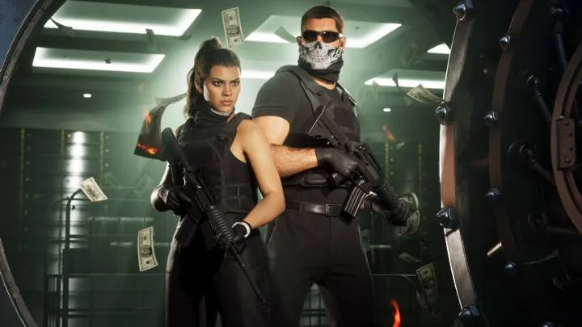
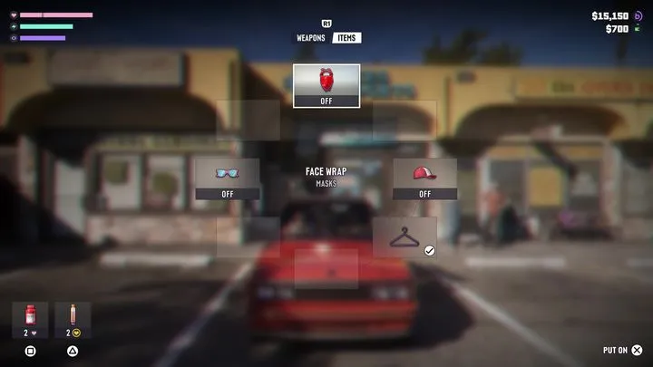

Два героя
Между Джейсоном и Лусией можно переключаться в любой момент — и в открытом мире, и в сюжетных миссиях. От выборов игрока зависит развитие их отношений.
В реальности:Джейсон и Лусия — Бонни и Клайд? →
Только то, что Rockstar показала официально или описали журналисты после знакомства с игрой. Источник указан у каждой механики. Всё непроверенное не публикуем.
12 в разделе: Герои и мир · Машины · Оружие и снаряжение · Дела и быт

Между Джейсоном и Лусией можно переключаться в любой момент — и в открытом мире, и в сюжетных миссиях. От выборов игрока зависит развитие их отношений.

Уровень розыска появляется, только если преступление видели свидетели или камеры. Полиция учитывает приметы, оружие и машину, а криминальный профиль запоминает, действуете вы аккуратно или жестоко.

Внешность героя меняется от питания и тренировок. Спортзал необязательный: мини-игры на кнопки, тренировки повышают здоровье и выносливость. Одежды — тысячи вариантов, и прохожие реагируют на внешний вид.

В телефоне — соцсети, банк, фитнес-приложение, такси и фото-режим. Чужие прямые эфиры можно открыть на весь экран.

Старую машину можно вскрыть Slim Jim (тихо, мини-игра на время) или разбить стекло (быстро и шумно). Для новых машин с электронными замками нужен клонер ключей.

У транспорта есть топливо, а угон учитывает уровень защиты машины.

С собой — ограниченный набор: основное, дополнительное и метательное оружие, бинокль. Остальное лежит в багажнике машины или в убежище — на 17:50 у открытого багажника появляется меню Weapons / Items.
Бандана, очки, кепка и быстрая смена одежды — через отдельное колесо, на ходу. Полиция запоминает лицо и одежду, так что маска и переодевание — тактика.

У оружия есть модели (Moreland 850 Shotgun). Два ствола переключаются без колеса, оружие с пола подбирается прямо в бою.

Ограбить можно любой магазин — тихо, со взломом или со взрывчаткой.

Холодильник — отдельное действие с меню: пиво Logger и Lavazas, смузи Blitz.

Охота — способ заработка, доступ к ней открывается через знакомого Джейсона. Пойманную рыбу нельзя оставить себе — только отпустить.
Кадры: Rockstar Games (трейлеры 1 и 2, «Расширенный показ», официальные скриншоты). Источник у каждой карточки указан под названием. Обновлено: 3 октября 2026.
Каждый день — одно сравнение: кадр игры рядом с реальным фото. Подписывайтесь:
YouTubeInstagramTikTokДругие разделы справочника: Персонажи · Транспорт · Бренды и заведения · Занятия · Животные · Регионы · Об игре